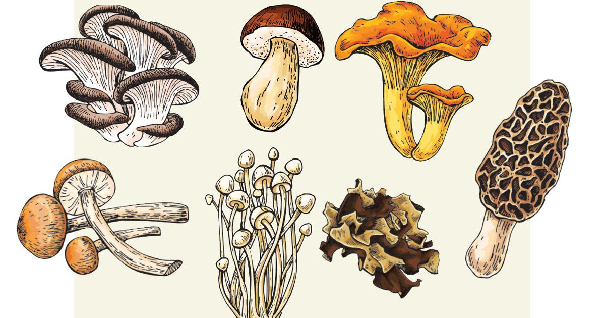

Mushrooms are a type of fungi belonging to the phylum Basidiomycota or Ascomycota. They are characterized by their distinctive fruiting bodies, which consist of a cap (pileus), stem (stipe), and gills (lamellae) or pores on the underside of the cap. Mushrooms play important roles in ecosystems as decomposers, symbionts, and sources of food and medicine for humans and other organisms.
Key Characteristics
- 1. Fruiting Body Structure: The typical mushroom structure consists of a cap, which protects the spore-producing surface, and a stem, which supports the cap and elevates it above the substrate. The underside of the cap may contain gills, pores, or other structures where spores are produced and released.
- 2. Spore Production: Mushrooms reproduce by producing and dispersing spores, which are microscopic reproductive cells. Spores are produced in specialized structures such as gills, pores, or spore-bearing surfaces on the underside of the cap. They are dispersed by wind, water, or animals, facilitating the reproduction and dispersal of mushrooms.
- 3. Ecological Roles: Mushrooms play crucial roles in ecosystems as decomposers, breaking down dead organic matter and recycling nutrients such as carbon, nitrogen, and phosphorus. They form symbiotic relationships with plants (mycorrhizae) and contribute to soil formation, water absorption, and nutrient uptake.
Classification
- Agaricaceae: This family includes many familiar mushrooms with gilled caps, such as Agaricus (button mushrooms, portobellos), Amanita (death caps, fly agarics), and Coprinus (ink caps).
- Boletaceae: Boletes are mushrooms with pores instead of gills on the underside of the cap. Examples include Boletus (porcini mushrooms), Suillus (slippery jacks), and Leccinum (birch boletes).
- Russulaceae: Russulas are mushrooms with brittle gills and a distinctive texture. They include Russula (brittlegills), Lactarius (milk caps), and Lactifluus (milky caps).
Culinary and Medicinal Uses
Mushrooms have been used for thousands of years as food and medicine by diverse cultures around the world:
- Culinary: Edible mushrooms are valued for their unique flavors, textures, and nutritional profiles. They are used in a wide range of culinary dishes, including soups, stews, stir-fries, salads, and sauces. Common edible mushrooms include button mushrooms, shiitake, oyster mushrooms, and portobellos.
- Medicinal: Some mushrooms have medicinal properties and are used in traditional medicine systems for their potential health benefits. Medicinal mushrooms are believed to boost the immune system, reduce inflammation, and protect against various diseases. Examples include reishi (Ganoderma lucidum), lion's mane (Hericium erinaceus), and turkey tail (Trametes versicolor).
Cultural and Recreational Significance
Mushrooms have cultural and recreational significance in many societies:
- Cultural Traditions: Mushrooms feature prominently in folklore, mythology, and cultural traditions around the world. They are associated with mystery, magic, and symbolism in various cultures and have inspired artistic expressions in literature, art, and cuisine
- Recreational Activities: Mushroom hunting, also known as mushroom foraging or mushrooming, is a popular recreational activity enjoyed by enthusiasts of all ages. Mushroom clubs, festivals, and events provide opportunities for mushroom enthusiasts to share knowledge, experiences, and appreciation for fungi.
Conclusion
Mushrooms, with their diverse forms, culinary delights, medicinal properties, and ecological significance, hold a special place in human culture and natural ecosystems. Whether enjoyed as a gourmet delicacy, used as a natural remedy, or admired for their beauty and diversity, mushrooms continue to captivate our imagination and enrich our lives in countless ways.